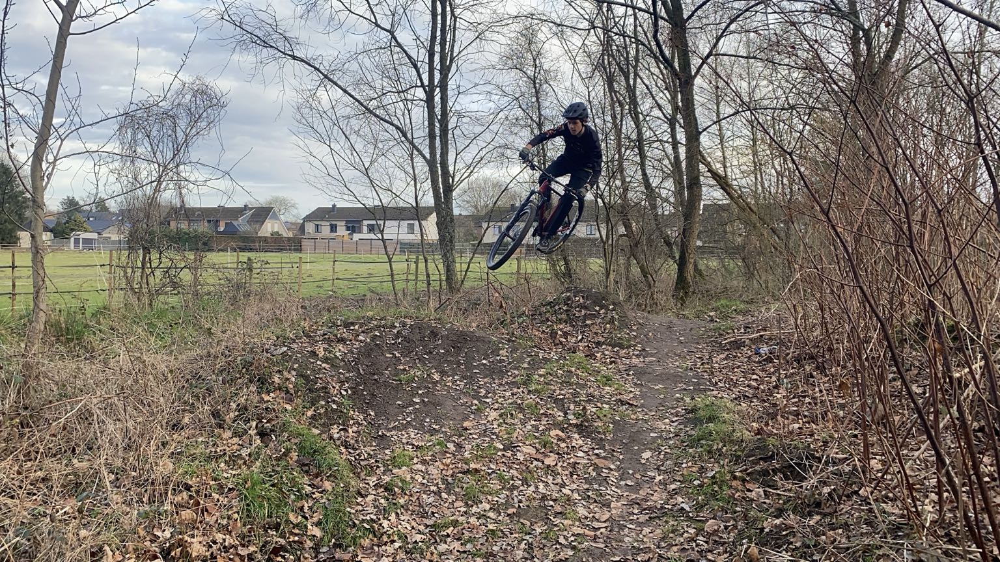

Wie ben ik?
Mijn naam is Vik. Ik ben 17 jaar oud en ik woon in Branst. Ik zit in de klas 5ICW en mijn favoriete vak is L.O.
Mijn hobby’s
In mijn vrije tijd hou ik van atletiek, mountainbike en soms gamen. Deze hobby’s helpen mij ontspannen en ik geniet daarvan.
Mijn favorieten
- Mijn favoriete game: The crew motorfest
- Mijn Favoriete sport: atletiek
- Mijn Favoriete muziek: Howling at the Moon (Milow)
Een afbeelding over mij
Hieronder staat een foto van mij die één van mijn hobby weergeeft.

Meer informatie
Wil je meer weten over één van mijn interesses? Bekijk dan deze website:
Klik dan op deze link